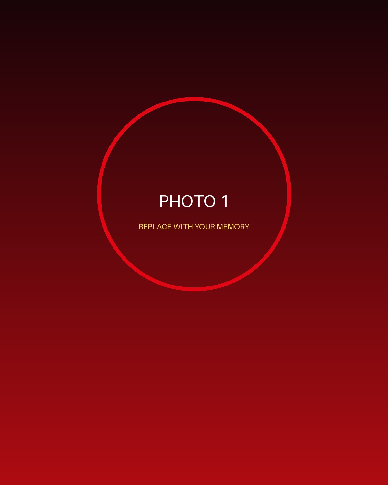
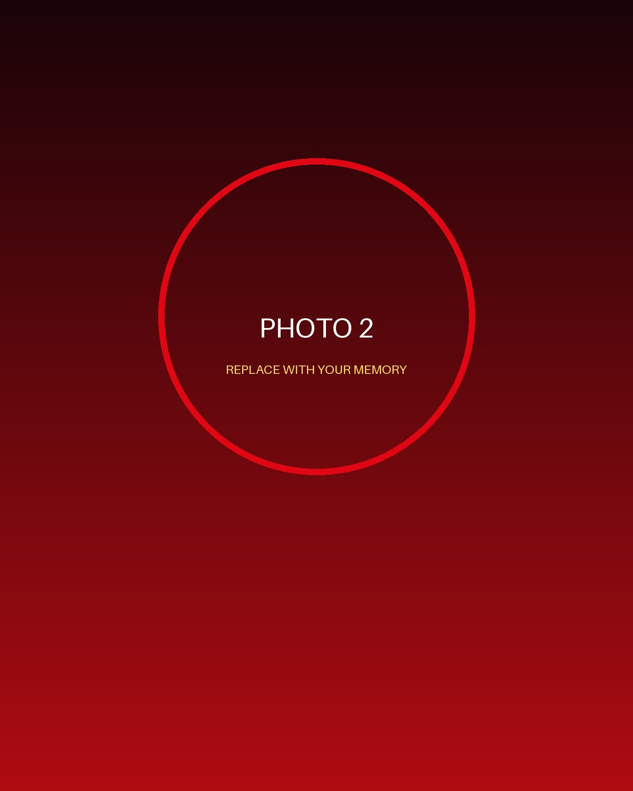
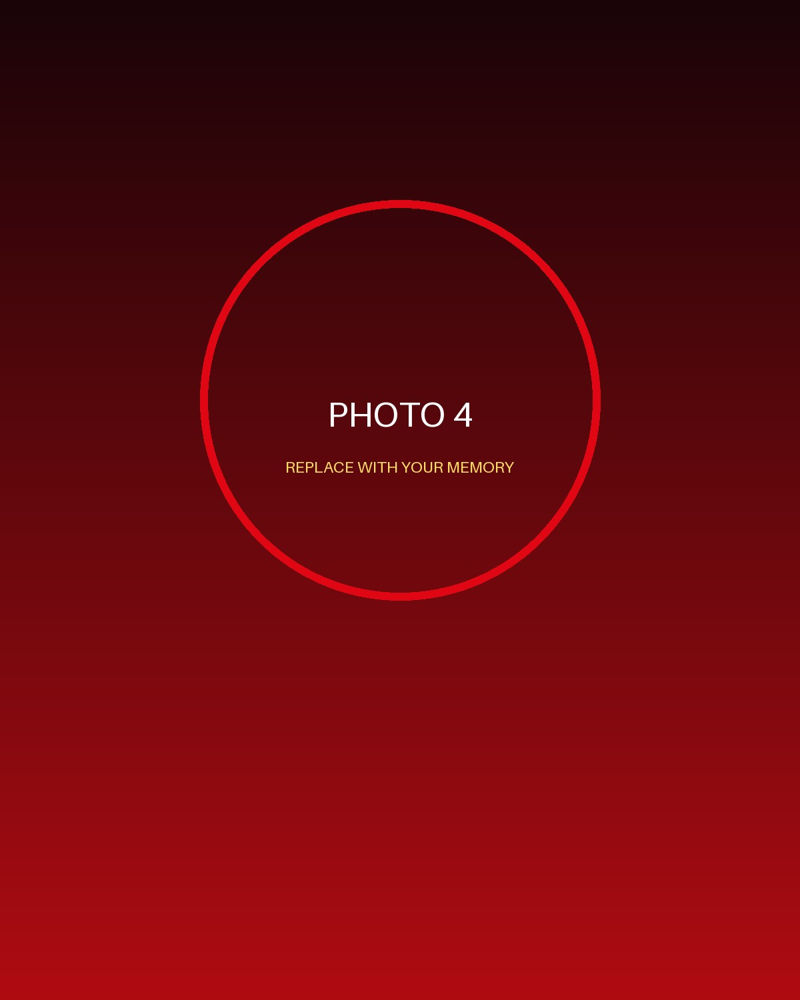

FIRST HALFจุดเริ่มต้นของเรื่องดี ๆ
PRIVATE ACCESS // 07 // MCR
FAN-MADE • FOR A UNITED FAN
INCOMING TRANSMISSIONYOU'VE BEEN
YOU'VE BEEN
SELECTED.
มีบางอย่างกำลังรอคุณอยู่หลังอุโมงค์นี้
3
ENTERING THE THEATRE OF DREAMS
OLD TRAFFORD • SPECIAL FIXTURETONIGHT
TONIGHT
IS YOUR
MATCH.
ยังไม่ใช่เกมธรรมดา และคืนนี้มีผู้เล่นคนเดียวที่สำคัญที่สุด

STARTING XI • NUMBER 07
YOUR MVP
365DAYS
PLAYED∞MEMORIES
MADE
PLAYED∞MEMORIES
MADE
แล้วก็ถึงเวลาเฉลยว่าแมตช์พิเศษนี้จัดขึ้นเพื่อใคร...
SURPRISE FIXTUREHAPPY
HAPPY
BIRTHDAY
YOUR MVP
ONE LOVE • ONE CLUB • ONE VERY SPECIAL DAY • 1878 • ONE LOVE • ONE CLUB •
04 MOMENTS • ONE STORYMATCHDAY
MATCHDAY
MEMORIES
SCROLL DOWN • เปิดความทรงจำทีละรูป

THE COMEBACKวันที่ยังจำได้เสมอ
HOME GAMEที่ตรงนี้มีความหมาย

STILL UNITEDและเรื่องยังไม่จบแค่นี้
A MESSAGE FROM YOUR TEAMTO OUR
TO OUR
NUMBER ONE.
ขอให้ปีนี้เป็นอีกฤดูกาลที่แกได้ทำในสิ่งที่อยากทำ เจอคนดี ๆ มีวันที่หัวเราะเยอะกว่าวันเหนื่อย และไม่ว่าจะเจอเกมยากแค่ไหน ก็ขอให้รู้ว่ายังมีคนคอยเชียร์แกอยู่ข้างสนามเสมอ
— From someone on your team.ONE WISH
BEFORE KICKOFF.
07
อธิษฐานไว้ในใจ แล้วกดค้างเพื่อเป่าเทียน
0%
PENALTY OF THE YEAR
MAKE IT
COUNT.
คำอธิษฐานพร้อมแล้ว ทีนี้ยิงมันไปให้สุด
POWER0%
GOAL!
FULL TIME • A NEW SEASON BEGINSHAPPY
HAPPY
BIRTHDAY!
YOUR MVP
A FAN-MADE BIRTHDAY EXPERIENCE FOR A MANCHESTER UNITED FAN • NOT AN OFFICIAL CLUB PRODUCT
PLAYER 07HBDFOREVER UNITED
PLAYER OF THE DAYYOUR MVP
Another year. Another season. Still our number one.
FAN-MADE • #BirthdayUnitedmade with tikki_card
กดปุ่มนี้แล้วระบบจะสร้างไฟล์ JPG 1080 × 1920 ให้จริง